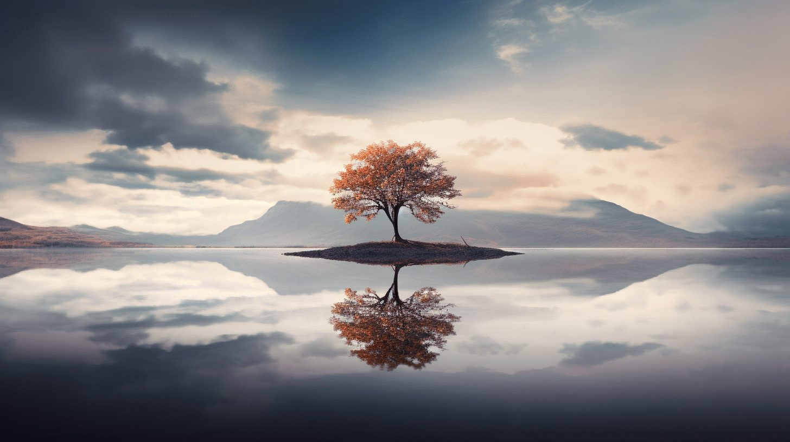
Les compositions d'image
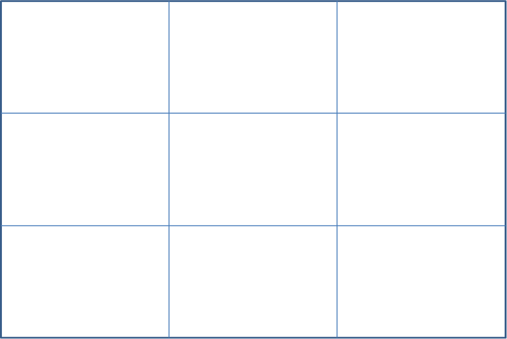
La règle des tiers
Imaginez votre image divisée en 9 cases égales par 2 lignes horizontales et 2 lignes verticales. Placez vos sujets importants sur ces lignes ou à leurs intersections plutôt qu'au centre. Le résultat est une image plus dynamique et naturellement agréable à l'œil.

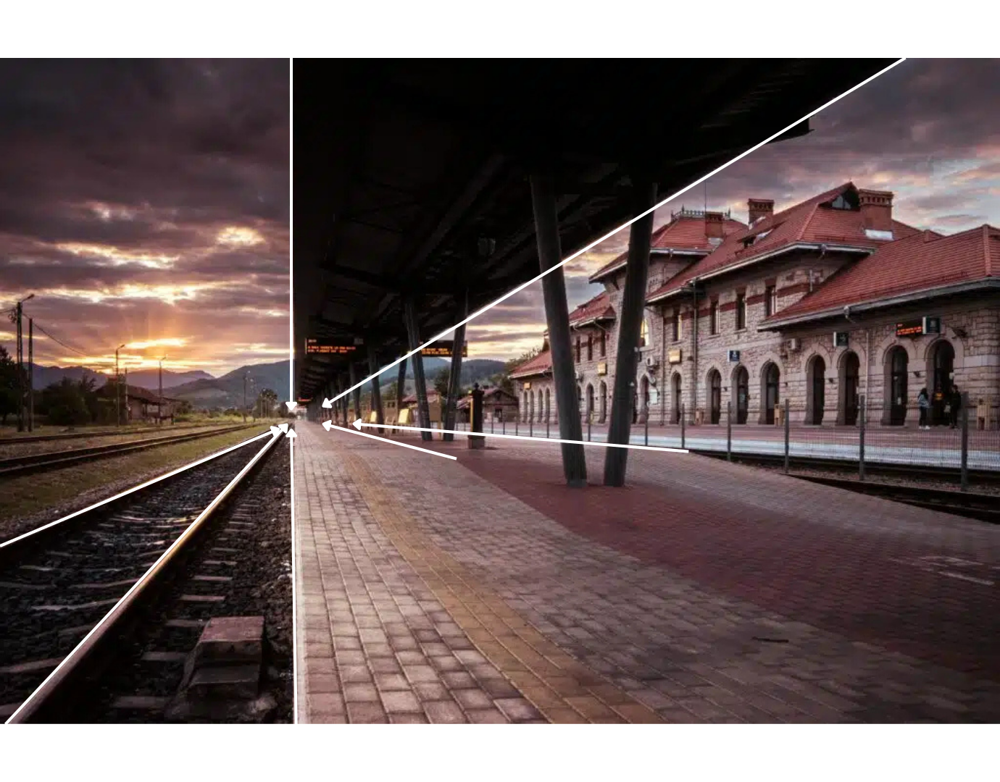
Lignes Directrices
Ce sont des éléments visuels — route, rivière, clôture, regard — qui guident l'œil du spectateur à travers l'image vers le sujet principal. Bien utilisées, elles créent de la profondeur et donnent une direction narrative à la photo, comme un chemin que l'œil suit naturellement.
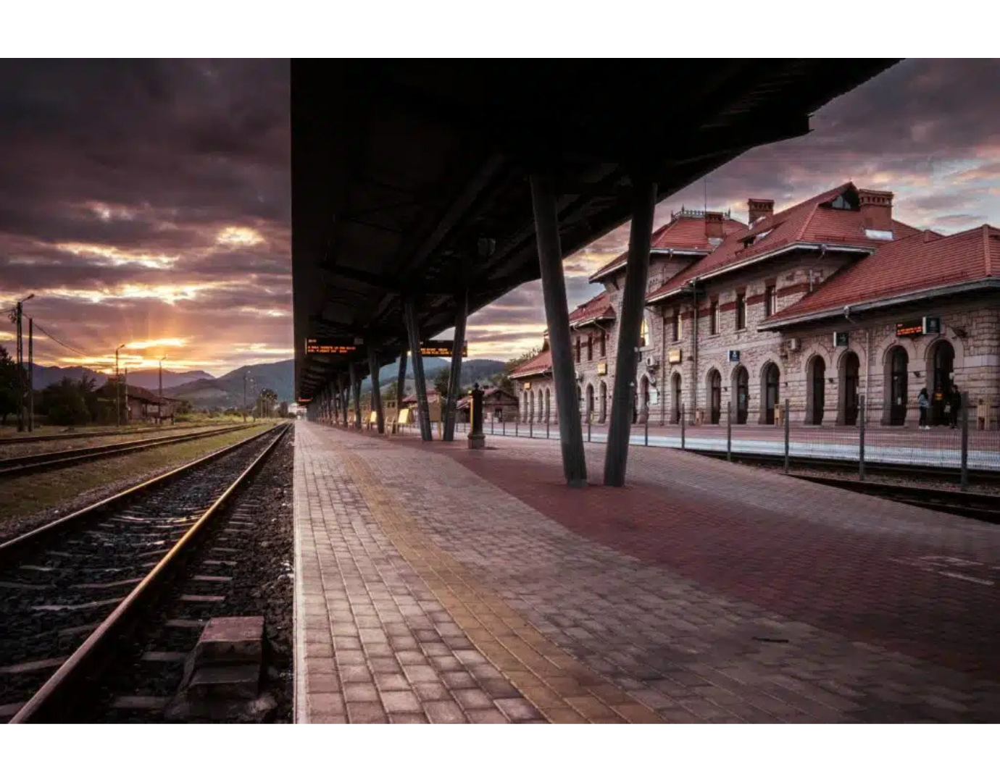
La Réflexion
Elle consiste à exploiter un reflet — dans l'eau, un miroir, une vitre — pour doubler ou compléter la scène. Le reflet n'est pas qu'un effet esthétique : il ajoute une dimension supplémentaire à l'image et joue souvent sur l'ambiguïté entre réel et illusion.
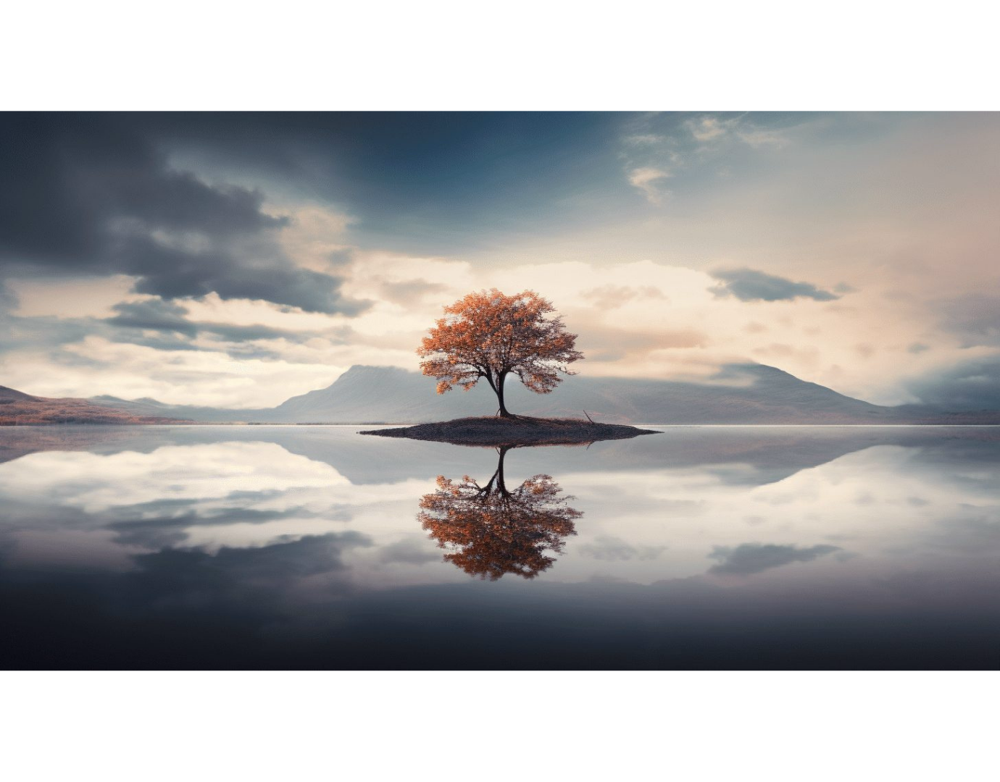
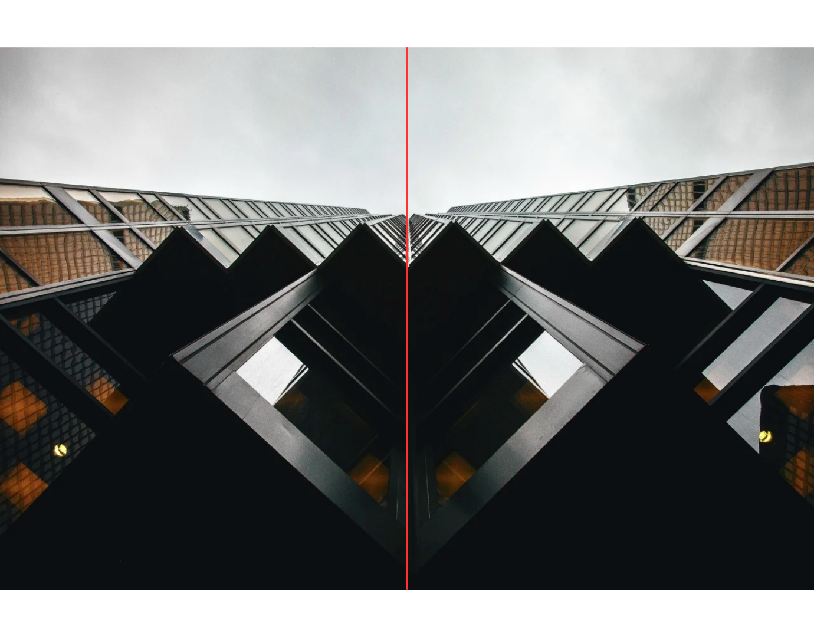
La symétrie
Contrairement à la règle des tiers, la symétrie place délibérément le sujet au centre et construit une image dont les deux moitiés se répondent. Elle dégage une impression de stabilité et d'ordre, particulièrement efficace en architecture ou en portrait.
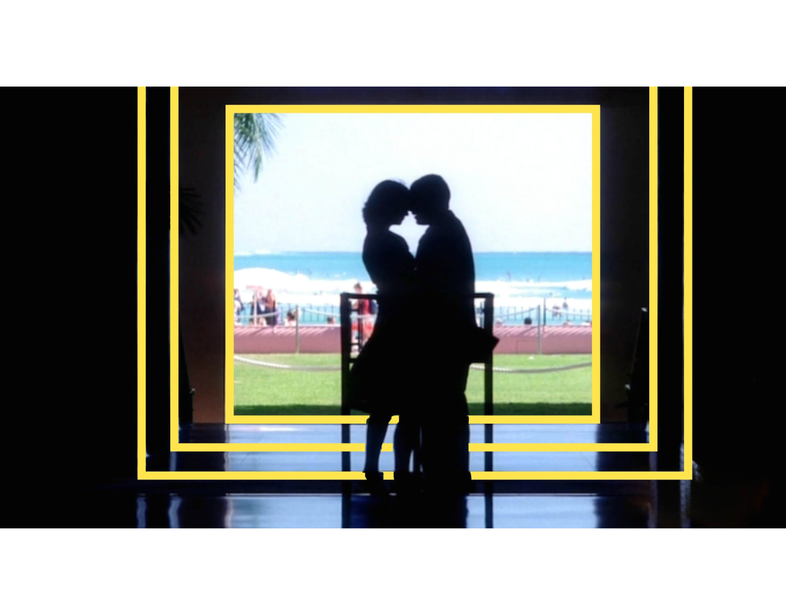
Cadre dans le cadre
Il s'agit d'utiliser un élément de la scène — une arche, une fenêtre, des branches — pour encadrer naturellement le sujet principal. Ce second cadre attire l'attention, isole le sujet du reste et ajoute une sensation de profondeur à l'image.
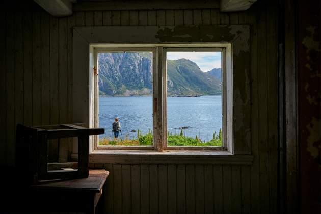
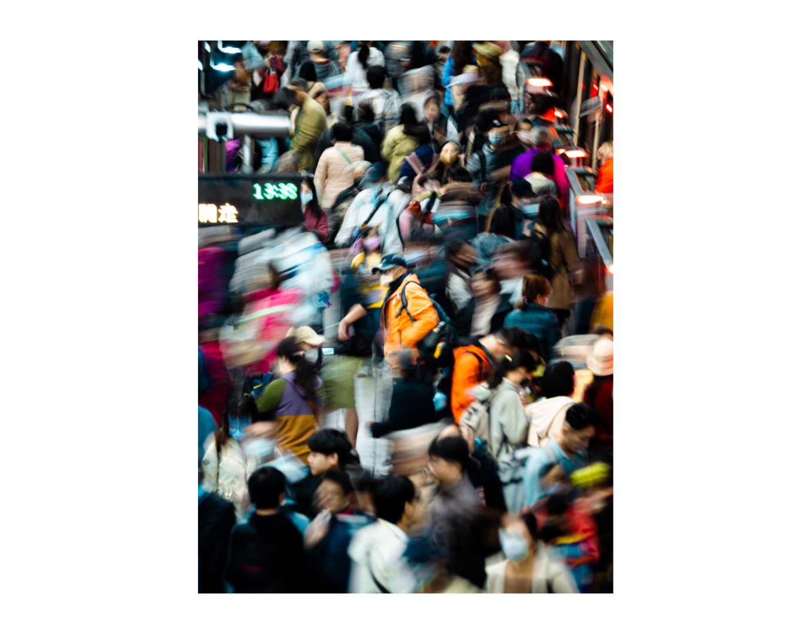
Remplir le cadre
Il s'agit de laisser le sujet occuper la quasi-totalité de l'image, sans espace vide autour de lui. On s'approche, on zoome, on coupe — l'objectif est d'éliminer tout ce qui distrait pour ne garder que l'essentiel. Le résultat est une image percutante, qui force le spectateur à s'immerger dans le détail.
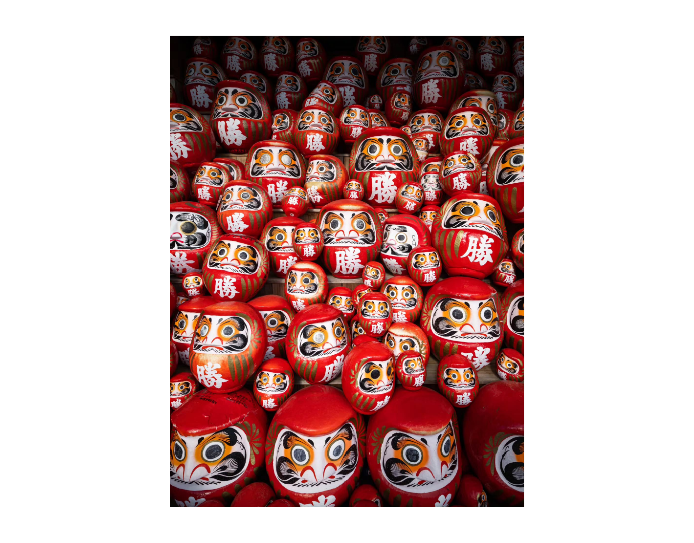
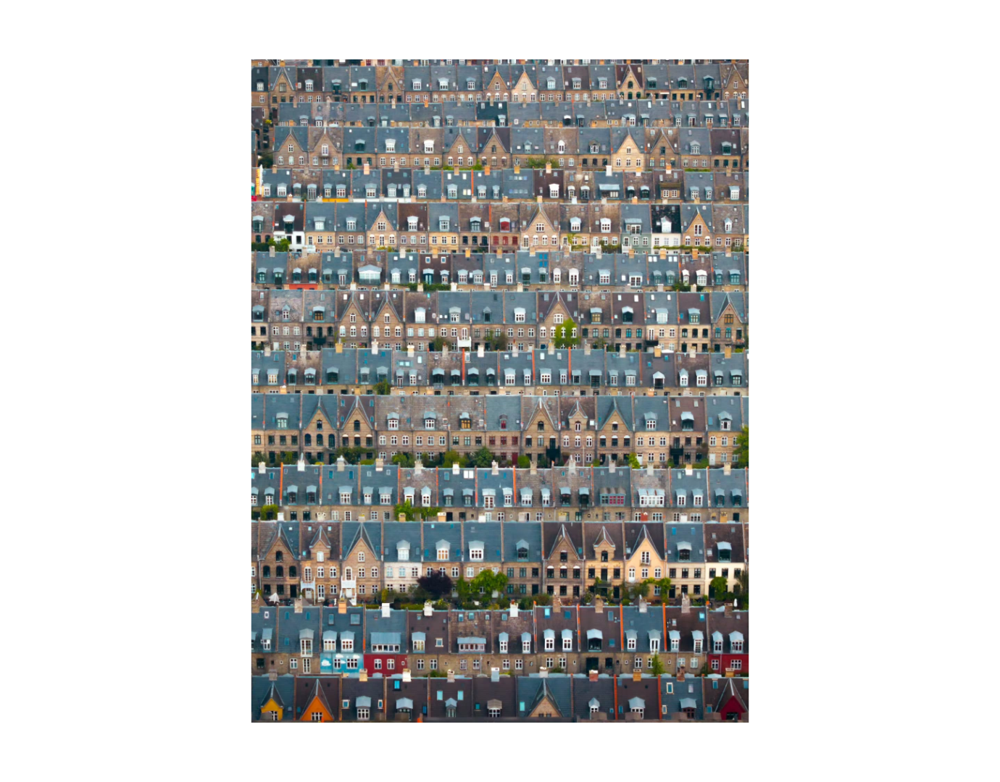
Les Patterns
Notre œil est naturellement attiré par la répétition — des fenêtres alignées, des pavés, des vagues. Un pattern crée un rythme visuel à la fois rassurant et hypnotique. Et si vous voulez aller plus loin, introduisez un élément qui brise cette répétition : c'est lui que l'œil cherchera en premier.
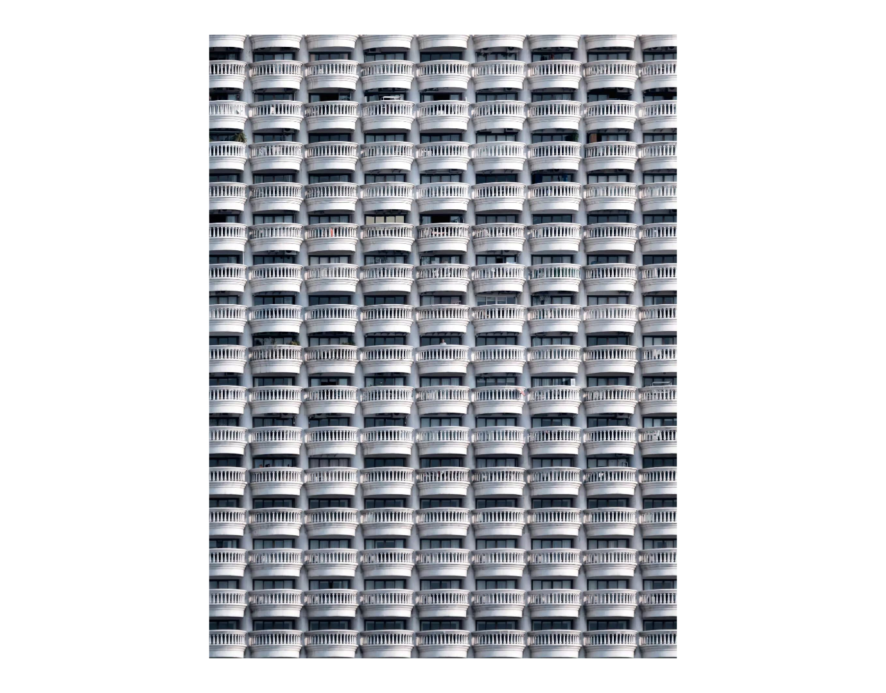